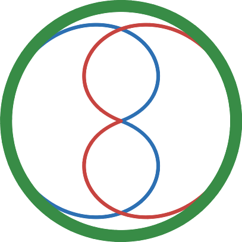
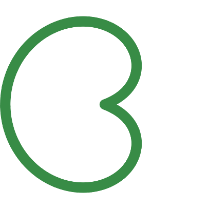
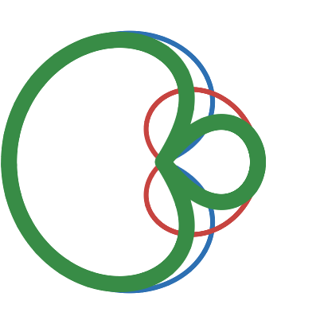

Tato stránka umožňuje detailní zkoumání parametrů mikrofonního snímání, včetně polohy mikrofonu, jeho směrových charakteristik a jejich vlivu na zachycení zvuku různých hudebních nástrojů a lidského hlasu ve čtyřech odlišných akustických prostředích. Pro podrobnější informace o ovládání aplikace lze využít informační ikonu umístěnou v pravém horním rohu.
Uživatelské rozhraní je rozděleno do čtyř hlavních ovládacích sekcí:
Každý nástroj disponuje několika technikami hraní stupnice od nejnižšího možného tónu. Techniky pokrývají jak impulznější (např. staccato), tak plynulejší, legatovější charakter hry. Kromě toho je k dispozici jedna až dvě hudební ukázky – zpravidla jedna pomalejší a jedna rychlejší, což umožňuje posoudit zvukový charakter nástroje v různých kontextech.
Pro simulaci vzdálenosti mikrofonu od zdroje jsou k dispozici čtyři pevně definované polohy v jednometrových krocích. Přesné vzdálenosti a úhel osy mikrofonů jsou popsány v záloze O projektu. Výběr vzdálenosti lze provést tažením směrové charakteristiky po ose mikrofonů.
Mikrofonní směrové charakteristiky zahrnují standardní vzory s definovanými poměry mezi přední a zadní kapslí:
 koule: přední kapsle = 0dB, zadní kapsle = 0dB
široká ledvina: přední kapsle = 0dB, zadní kapsle = -10dB
 ledvina: přední kapsle = 0dB, zadní kapsle = -∞dB
 superkardioida: přední kapsle = 0dB, zadní kapsle = -10dB + Ø
 osmička: přední kapsle = 0dB, zadní kapsle = 0dB + Ø
osmička: přední kapsle = 0dB, zadní kapsle = 0dB + Ø
Výběr směrové charakteristiky lze provést kliknutím na ikonu mikrofonu umístěnou napravo od přehrávací části.
Akustické prostředí lze měnit prostřednictvím ikony prostoru umístěné nalevo od přehrávací sekce. K dispozici jsou čtyři typy prostorů:
Přehrávání zvukových ukázek je možné ovládat pomocí ikon
play
 stop
stop
 pause
pause
 loop
loop
 Funkce smyčky umožňuje vymezení úseku, jehož délku lze upravit tažením hranic. Smyčku lze deaktivovat opětovným kliknutím.
Funkce smyčky umožňuje vymezení úseku, jehož délku lze upravit tažením hranic. Smyčku lze deaktivovat opětovným kliknutím.
Pro lepší orientaci je k dispozici vizualizace časového průběhu audio signálu ve formě vlnové křivky. Aktuálně zvolený prostor je zvýrazněn oranžovým okrajem. Kliknutím na waveformu lze přeskakovat.